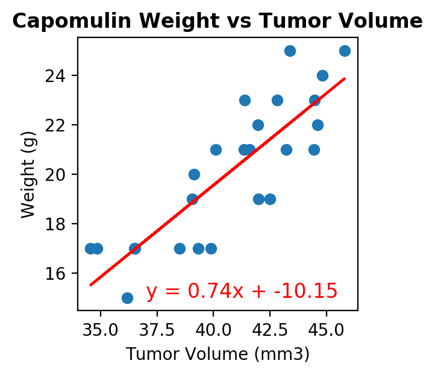
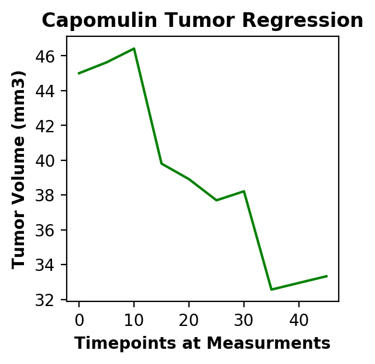
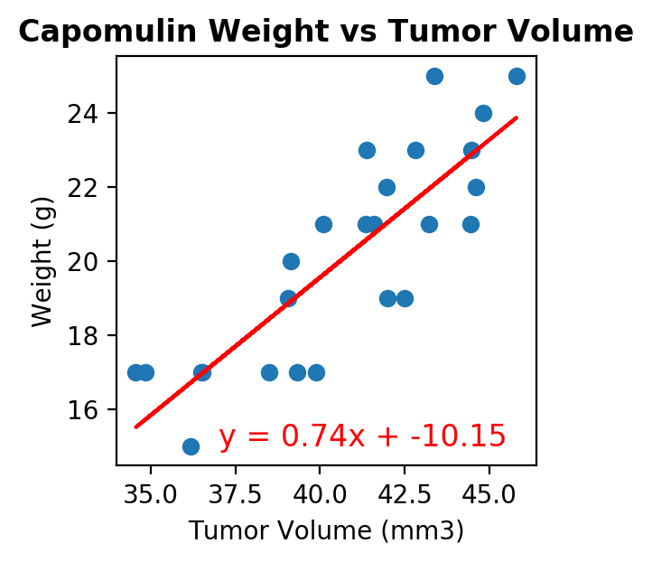
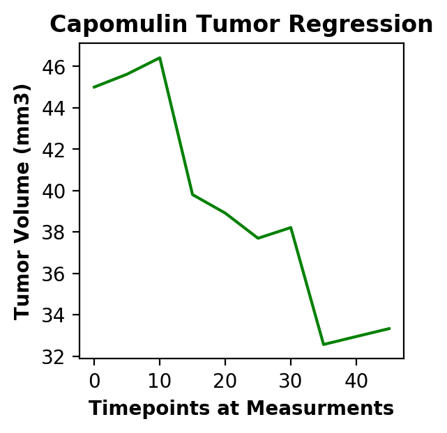

Drug Regimens vs Tumor Volumes
The purporse of this project is to analyze and plot research data for new cancer treatment drugs. In this data set, 248 mice were used to analyze 10 drug regimens (incliuding a placebo). Four of the regimens were selected to summarize and plot the results of the research. The selected drug regimens are: Capomulin, Ramicane, Infubinol, and Ceftamin.
I think mice are rather nice. Their tails are long, their faces small They haven’t any chins at all. Their ears are pink, their teeth are white, They run about the house all night. They nibble things they shouldn’t touch And no one seems to like them much. But I think mice are nice.
Visualizations
 


